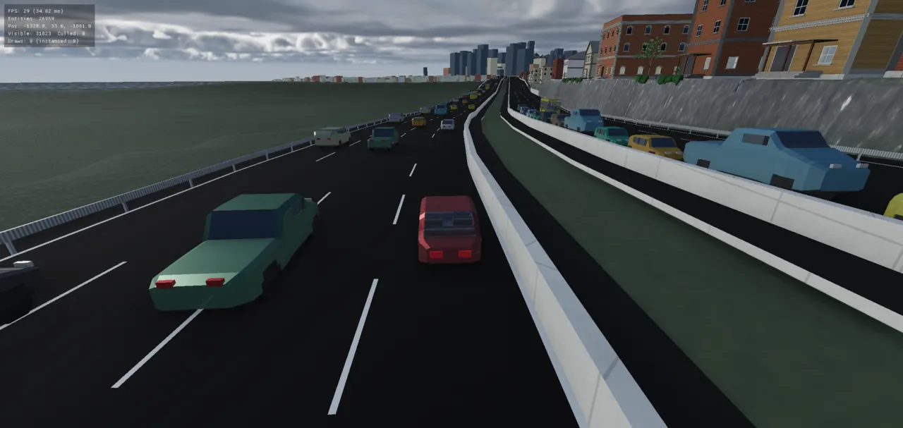
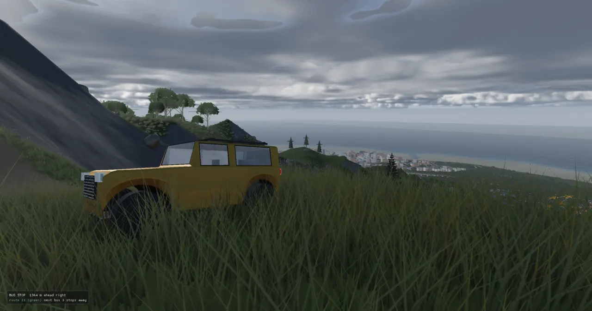
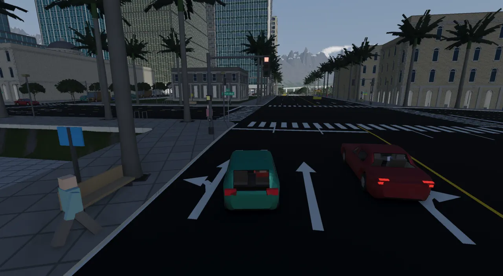
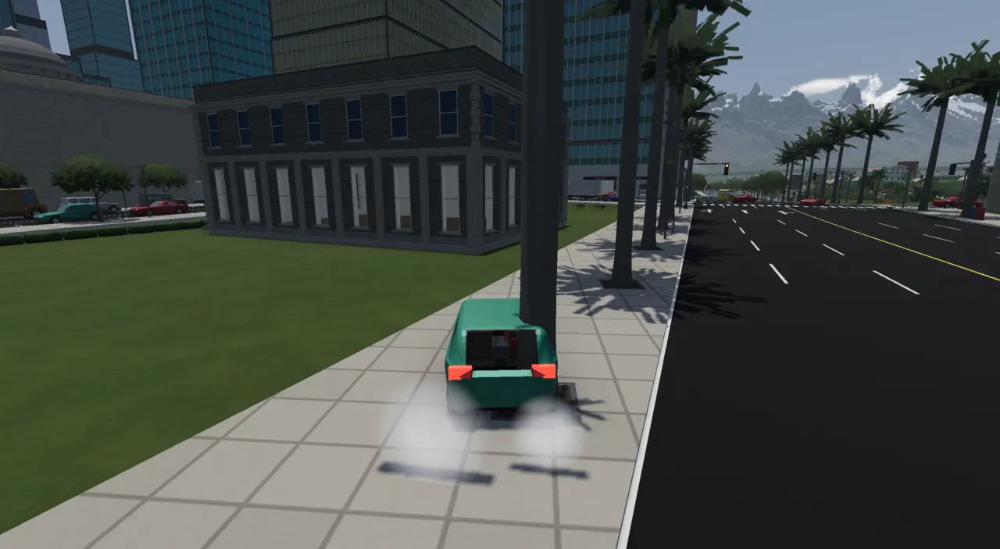
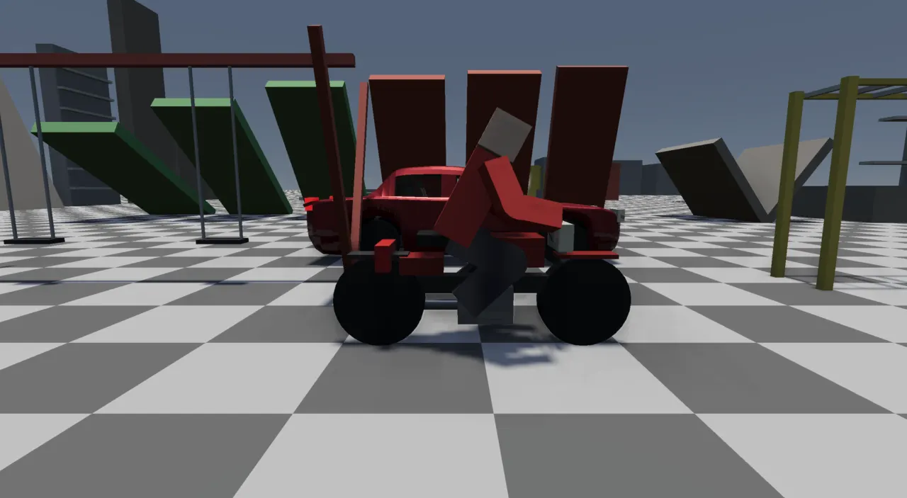
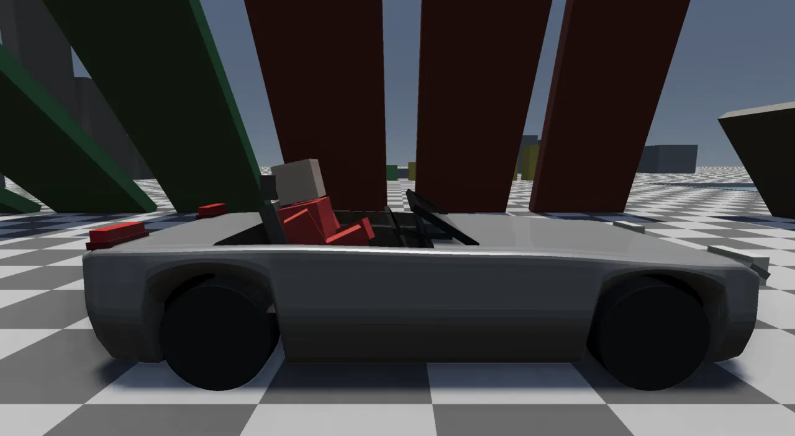
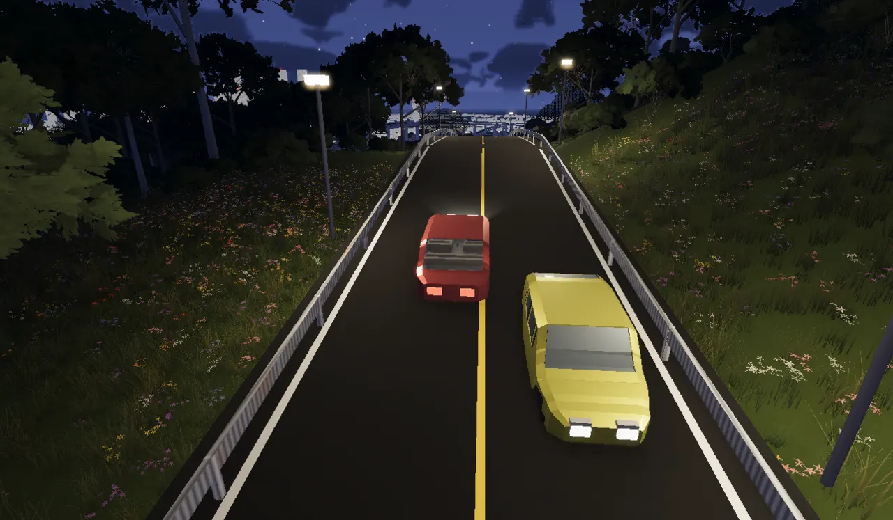

Vehicles: built, driven and handled
Every car, truck and bike starts as a Lua recipe. The recipe builds a body with the engine's own modelling kit and lists the physics numbers: wheels, springs, engine, drivetrain. The same recipe feeds the city's traffic and the car the player drives. Whoever is driving, the player or the city, the car gets the same four inputs (throttle, steering, brake, handbrake), and Jolt's vehicle constraint does the physics.
What a vehicle is here
A vehicle has three parts, and the code keeps them separate:
- A body to draw. This is a mesh: the painted shell, the glass, the cabin, the lamp lenses. It comes from Lua, built on a polymesh kit. That is a small hard-surface modeller inside the engine (loft, extrude, inset, crease, subdivide), so nobody imports a model.
- A body to simulate. This is a Jolt VehicleConstraint: a dynamic box or hull for the chassis, plus raycast wheels. Each wheel has a spring, a tyre friction curve, brakes and a share of the engine's torque.
- A driver. The driver produces a
DriverInputeach fixed step. It can be the player's keys, an AI controller, or nobody (then the car holds its brake).
The city has hundreds of cars, and most of them are not Jolt vehicles. Ambient traffic is moved by the city planner along its lane path and drawn as instanced meshes. A car becomes a real physics vehicle only when the player takes it (promotion), or when a level gives it a physical-tier budget. The citysim page covers how the planner moves those cars. This page covers the vehicle itself.
From recipe to Jolt
The vehicle pipeline. A recipe returns a plain Lua table. Two C++ readers turn it into data: one
for a car the player drives, one for the city's instanced fleet. Either way the physics ends in
PhysicsWorld::addVehicle.
Lua runs only at load. The meshes it returns are plain data, with no ECS and no simulation state, so a seeded
run stays deterministic (ADR-0065).
The fleet is "description up front, geometry on demand". Each slot carries its class and size as plain data,
which is all the headless simulation needs. The mesh is built only when something calls build():
local FLEET_SLOTS = { { kit = "sedan", color = { 0.62, 0.06, 0.07 } }, -- sedan (red) -- ... { kit = "jeep", color = { 0.24, 0.30, 0.18 } }, -- jeep (olive) { kit = "convertible", color = { 0.80, 0.12, 0.10 } }, -- convertible (red) { kit = "pickup", color = { 0.14, 0.30, 0.20 } }, -- pickup (green) { kit = "step_van", color = { 0.36, 0.22, 0.10 } }, -- parcel step van (brown) { kit = "small_truck", color = { 0.90, 0.90, 0.88 } }, -- small box truck (white cab) { kit = "fire_engine", color = { 0.70, 0.05, 0.05 } }, -- FIRE ENGINE (fire-engine red): stationed, never traffic { class = "bus", color = { 0.86, 0.62, 0.08 } }, -- CITY BUS (municipal yellow), mesh.car }
local function catalogue(slots) local out = {} for i, slot in ipairs(slots) do if slot.kit then out[i] = { class = slot.kit, size = kit_size(slot.kit), build = function() return kit_car(slot.kit, slot.color) end, } else -- ... (a mesh.car class: the bus) end end return out end
A level picks a fleet with citysim.fleet. There are three: fleet_kit (the default),
classic (the older mesh.car bodies, which Glenn kept "as a 'classic' set") and
fleet_mixed (both together, 25 slots, made for island 8). selectFleet in
vehicle_body.h points vehicle.fleet at the one chosen.
The vehicle spec, field by field
A drivable recipe returns one table. Its fields fall into six groups, and each group maps onto a C++ struct.
The structure of a vehicle spec. On the left is what Lua writes. On the right are the structs
loadVehicleSpec fills, and the ECS component spawnVehicle makes from them.
VehicleSystem later hands config to Jolt.
struct VehicleSpec { std::shared_ptr<RenderMesh> body; Vec3 albedo{0.70, 0.12, 0.12}; float metallic = 0.6f; float roughness = 0.35f; PhysicsWorld::VehicleConfig config; // ... struct Part { std::shared_ptr<RenderMesh> mesh; Vec3 albedo{1, 1, 1}; // white: hue rides the mesh's vertex colours float metallic = 0.0f; float roughness = 0.5f; float opacity = 1.0f; Vec3 emission{0, 0, 0}; }; std::vector<Part> parts; // ... std::vector<LampMarker> lights; // ... Vec3 driverSeat{0, 0, 0}; bool hasDriverSeat = false; // ... bool openSeat = false; SeatGeometry seat; // `pedals = true`: legs, not an engine (a bicycle) -- no engine note; the freewheel and the tyres instead bool pedalled = false; // ... Real suspensionMin = PhysicsWorld::kStreetSuspensionMin; Real suspensionMax = PhysicsWorld::kStreetSuspensionMax; Real suspensionFrequency = PhysicsWorld::kStreetSuspensionFrequency; Real suspensionDamping = PhysicsWorld::kStreetSuspensionDamping; Real suspensionRestDrop = PhysicsWorld::kStreetSuspensionRestDrop; bool partTime4wd = false; };
Why a list of parts rather than one mesh? A Renderable carries a single material,
and glass needs an opacity below 1. When the glass was merged into the body, the windows read as solid panels.
So spawnVehicle turns each part into a child Renderable pinned to the chassis.
The fleet reader returns a different struct, CarBodyRecipe. Ambient traffic draws a whole car,
wheels included. A promoted car needs the same car without wheels, because Jolt grows real ones. So the fleet
recipe publishes both meshes, plus the wheelset as data:
struct CarBodyRecipe { RenderMesh mesh; RenderMesh chassis; std::vector<WheelPlacement> wheels; std::vector<Attachment> lights; Vec3 size{0, 0, 0}; std::string className; // THE GLASS, its own part for every slot. A see-into vehicle (the bus: `seeInto`) always draws it // clear; ordinary traffic draws it opaque and reflective, and clear only near the player (fleet v2). RenderMesh glass; // The cabin, apart from the shell for ordinary traffic (drawn only near the player); a see-into // vehicle has it in `mesh` and leaves this empty. RenderMesh interior; bool seeInto = false; bool openSeat = false; // `open_seat`: nothing round the driver (a convertible): a crash throws them (ADR-0252) // ... std::vector<Vec3> seats; std::vector<Vec3> doors; // floor points a passenger steps off from Vec3 driverSeat{0, 0, 0}; bool hasDriverSeat = false; };
The fleet's size is the source of truth for the city. Car-following gaps, parking bays,
collider proxies and a promoted car's chassis all read it, so they agree with the drawn body by construction.
This replaced a hard-coded C++ table (kFleet) that every car used to be scaled to fit. That table
disagreed with the class packages by up to 18%. Because the error was different on each axis, the fit squashed
round wheels into ellipses: the pickup's by 10% and the hatchback's by 8% (vehicles.lua comment).
Bodies: from boxes to a modelling kit
The car bodies have been rebuilt four times. Each rebuild answered a specific complaint:
| Era | How a body was made | Why it moved on |
|---|---|---|
| Boxes | C++ buildCarMesh: hull, cabin, glass slabs and wheels as axis-aligned
boxes. ADR-0065 moved the same boxes into Lua (parts = {pos, size, color}). |
"Every one read as a cybertruck" (vehicle_mesh.h). |
| Lofted shell | buildCarShell: a superellipse cross-section swept along a roofline. |
It regressed on device: inverted faces from a winding heuristic, and doubled wheels and lamps (ADR-0062). |
mesh.car | A chamfered profile swept through silhouette stations, flat-shaded through
MeshBuilder::emitQuad, with real window holes (procgen/vehicle/car_mesh.cpp). |
Each new shape needed C++. Glenn asked for "more realistic vehicles … not just cubes on wheels". |
| Polymesh kit | procgen/polymesh.{h,cpp}, exposed to Lua as poly.*.
vehicle_kit.lua builds every car and truck from it. | Current (ADR-0139, 0140). The bus
stays on mesh.car, which Glenn likes. |
The kit is an editable polygon mesh. Its faces carry a group, a material and a colour; its edges carry a crease
sharpness. It comes with the operations a box-modeller uses: loft, extrude, inset, crease, mirror,
Catmull-Clark subdivide, then toParts to make one RenderMesh per material.
struct PolyMesh { static constexpr float kInfCrease = 1e6f; struct Face { std::vector<int> v; int group = 0; int mat = 0; Vec3 color{1, 1, 1}; }; std::vector<Vec3> pts; std::vector<Face> faces; std::vector<std::string> groups{"default"}; std::vector<std::string> mats{"body"}; std::map<std::pair<int, int>, float> creases; // undirected (min, max) -> sharpness // ... std::map<int, float> corners; // ... };
Every kit body is a single loft. The cross-section has the same ten corners at every station along the car: bottom, rocker, side, shoulder, glass base and roof edge, on each side. Because the corners match, the loft is a clean quad cage. What makes a sedan a sedan is a set of profile curves along the car: the belt line, the glass keys (cowl, A-pillar top, C-pillar top, deck), the roof drop, the plan-view taper and the wheel arches. A body spec is just those numbers:
S.sedan = function() return kit.profile{ name = "sedan", L = 4.70, W = 1.84, H = 1.45, clear = 0.15, r = 0.33, fo = 0.95, ro = 1.05, glass = { cowl = 0.55, a_top = -0.05, c_top = -0.95, deck = -1.45, a_side = 0.45, c_side = -1.05, pillars = { -0.25 } }, belt = { { -1, 0.84 }, { -0.87, 0.95 }, { -0.62, 0.98 }, { -0.1, 0.95 }, { 0.23, 0.92 }, { 0.83, 0.84 }, { 1, 0.66 } }, windows = { side = { edge = 1.0, corner = 0.8 }, windshield = { edge = 1.0, corner = 0.6 }, back = { edge = 1.0, corner = 0.6 } }, color = { 0.62, 0.06, 0.07 } } end
kit.build(P, level) lofts the cage, assigns the glass and sets it behind a trim reveal, adds the
lamps and the cabin, centres the result, and returns parts, wheels, size, lamp markers and the driver's hip
point. Glenn preferred the faceted look of the bus ("maybe we should stick with the faceted look"), so traffic
builds at cage level, flat-shaded, at 1.4k–3.7k triangles per body (ADR-0140). Subdivision stays available
through P.level.
Lamps are placed by a small placement grammar. A ray is cast onto the finished body, and the part is set into whatever surface it hits. Before this, lamp positions were guessed from the profile curves, and they ended up buried inside the body.
function kit.attach(S, rule) local o = { rule.from[1], rule.from[2], rule.from[3] } local step = rule.step or { 0, -0.02, 0 } for _ = 1, rule.tries or 12 do local hit, nrm = S:raycast(o, rule.dir) if hit then local d = rule.size[3] local e = rule.embed or 0.01 local at = { hit[1] + nrm[1] * (d * 0.5 - e), hit[2] + nrm[2] * (d * 0.5 - e), hit[3] + nrm[3] * (d * 0.5 - e) } return kit.oriented_box(rule.size, at, nrm, rule.mat), at, nrm end o = { o[1] + step[1], o[2] + step[2], o[3] + step[3] } end return nil end
Interiors come from kit.interior (ADR-0140). The liner is the cabin's own sheet metal copied 4 cm
inward and flipped. On top of it go a floor, bucket seats set from real hip-point proportions, a dashboard, a
steering wheel on its column, and a console. The driver's seat point is taken from those seats.

classic set.
Glass and the near swap
A car with transparent glass costs a transparent draw. A city with hundreds of instanced cars cannot afford that, so the fleet first merged dark-tinted glass into the opaque shell. Glenn's note was "opaque windows", and the player's car (clear glass, a cabin) looked like a different vehicle. ADR-0138 split the difference. Traffic at large draws its glass as an opaque, near-mirror material: roughness 0.03, metallic 0.15, one opaque instanced draw per slot. The cars nearest the player swap to clear glass with the cabin and driver visible, from the same instance, so nothing pops:
constexpr Real kNearIn = 50.0, kNearOut = 58.0; constexpr std::size_t kNearCount = 12; std::vector<std::pair<Real, int>> cand; if (sim_.hasTierCenter()) { const Vec2 c = sim_.tierCenter(); const auto& ags = sim_.agents(); for (std::size_t v = 0; v < cars.size() && v < carSeeInto_.size(); ++v) { if (!cars[v] || carSeeInto_[v]) continue; for (int ai : carAgentIds_[v]) { if (ai < 0) continue; if (!carOccupied(ai)) continue; // a car left at the kerb is not swapped: nobody in it const Real d = (ags[static_cast<std::size_t>(ai)].pos - c).length(); if (d < (nearSwap_.count(ai) ? kNearOut : kNearIn)) cand.push_back({d, ai}); } } } std::sort(cand.begin(), cand.end()); nearSwap_.clear(); for (std::size_t i = 0; i < cand.size() && i < kNearCount; ++i) nearSwap_.insert(cand[i].second);
The gap between 50 m and 58 m is hysteresis: a car at the edge does not flicker between the two looks. The bus and the open convertible are see-into vehicles. They always draw clear, and their cabin rides in the shell.
Wheels on the ground
Two rules decide where the wheels go. One is for drawn cars, the other for simulated ones.
Drawn (kinematic) cars rest on four contact patches
(ADR-0137).
agentPose samples the road surface under each tyre and fits a least-squares plane for pitch and
roll. It then sets the height so the lowest tyre touches. The old rule sampled one point at the centre and
could not tell a street from the overpass above it, so it once drew street cars 8.6 m up on the freeway. On the
wheel lab, measured over 1170 car samples: the worst 1% of sinking went from −0.118 m to −0.003 m, and the
share of cars more than 5 cm off the road went from 3.8% to 1.1%. RT_FOUR_WHEELS=0 restores the
old rule for an A/B comparison.
Simulated cars follow one suspension rule, which lives in PhysicsWorld so every path that
builds a car shares it. A recipe publishes each wheel's drawn resting centre. Jolt, however, wants the
suspension attachment point, and hangs the wheel below it by the spring's settle. If the drawn centre is
passed straight through, the car parks one settle too high. With the stock 0.20/0.45 m travel that was 0.375 m,
which is why "the player's car rode jacked up with its wheels dangling". So each reader lifts the attach point
by kStreetSuspensionRestDrop:
static constexpr Real kStreetSuspensionMin = 0.0; static constexpr Real kStreetSuspensionMax = 0.22; static constexpr Real kStreetSuspensionFrequency = 1.8; static constexpr Real kStreetSuspensionDamping = 0.6; static constexpr Real kStreetStaticDeflection = 0.052; // at 1.8 Hz static constexpr Real kStreetSuspensionRestDrop = kStreetSuspensionMax - kStreetStaticDeflection;
The settle depends only on the spring's frequency, not on the car's mass: clamp(max − staticDeflection,
min, max). A 1100 kg hatchback and a 2600 kg truck therefore settle by the same amount, and
tests/test_driving_lab.cpp pins that.
Into Jolt: what addVehicle builds
PhysicsWorld::addVehicle is the one place a VehicleConfig becomes Jolt objects. The
chassis is a dynamic box with its underside carved off by floorClearance (0.22 m by default). An
off-roader instead gets a convex hull whose nose and tail are cut at its approach and departure angles. The
centre of mass is lowered by comOffsetY. Then each wheel gets its settings:
for (const VehicleWheel& w : cfg.wheels) { JPH::WheelSettingsWV* ws = new JPH::WheelSettingsWV(); ws->mPosition = toJolt(w.position); ws->mRadius = static_cast<float>(w.radius); ws->mWidth = static_cast<float>(w.width); ws->mSuspensionMinLength = static_cast<float>(w.suspensionMin); ws->mSuspensionMaxLength = static_cast<float>(w.suspensionMax); ws->mSuspensionSpring.mFrequency = static_cast<float>(w.suspensionFrequency); ws->mSuspensionSpring.mDamping = static_cast<float>(w.suspensionDamping); ws->mMaxSteerAngle = w.steered ? JPH::DegreesToRadians(static_cast<float>(cfg.maxSteerDegrees)) : 0.0f; { // brake balance: brakeTorque is the per-wheel average; the front axle takes brakeFrontBias of it // ... } // The lateral slip curve at the config's grip (Jolt's shape: a peak // at 3 degrees of slip, 85 % of it once sliding past 20). ws->mLateralFriction.Clear(); ws->mLateralFriction.AddPoint(0.0f, 0.0f); ws->mLateralFriction.AddPoint(3.0f, static_cast<float>(cfg.lateralGrip)); ws->mLateralFriction.AddPoint(20.0f, static_cast<float>(cfg.lateralGrip * 0.85)); ws->mMaxHandBrakeTorque = w.handBrake ? static_cast<float>(cfg.handBrakeTorque) : 0.0f; vs.mWheels.push_back(ws); }
Two more choices in the same function matter. A two-wheeler gets Jolt's MotorcycleController
instead of the four-wheel one (see below). And the wheels are tested against the ground by casting their whole
cylinder, not a single ray:
JPH::VehicleConstraint* constraint = new JPH::VehicleConstraint(*chassis, vs); // Cast the wheel's actual CYLINDER, not a single ray. A ray only samples // straight down from the hub, so a kerb's vertical face was invisible to // the suspension and the chassis just rammed it — the "car stops dead at a // kerb" bug. The cylinder cast sees the step's edge, rides the contact up, // and the car mounts kerb-height steps; walls still read as walls because // their contact normal is horizontal (and the chassis box still collides). constraint->SetVehicleCollisionTester( new JPH::VehicleCollisionTesterCastCylinder(Layers::MOVING)); impl->physicsSystem.AddConstraint(constraint); impl->physicsSystem.AddStepListener(constraint);
One car system, one control seam
At first the engine had two car systems that shared nothing. The player drove a Jolt vehicle, while city cars were kinematic pose-holders that could not be entered or driven. Glenn's standing requirement was one car system: the player can walk up to any car and drive it (ADR-0062). The seam that delivers it is a four-number struct:
struct DriverInput { Real throttle = 0; // [-1,1] forward drive (negative = reverse) -> `forward` Real steer = 0; // [-1,1] steering, +right / -left -> `right` Real brake = 0; // [0,1] -> `brake` Real handBrake = 0; // [0,1] -> `handBrake` }; // ... struct DriverState { Vec2 forward{1, 0}; // unit XZ heading (the chassis' +Z basis, flattened) Real speed = 0; // forward speed m/s (signed; < 0 = rolling backward) }; // ... struct DriverCommand { Vec2 desiredHeading{1, 0}; // unit XZ direction to steer toward Real desiredSpeed = 0; // m/s to seek (<= brakeSpeed -> come to a stop) };
The control seam. Every driver ends in the same four numbers, and every car takes the same physics
step. The helpers run before Jolt's step, in PhysicsWorld::update.
ctx.world.each<Vehicle>([&](Entity e, Vehicle& v) { if (v.vehicleId == PhysicsWorld::INVALID_VEHICLE) return; DriverInput in; if (v.driver.valid()) { // ... in.throttle = throttle; in.steer = shapeSteer(v.steerApplied, steer, fwdSpeed, ctx.clock.fixedStep()); in.brake = brake; in.handBrake = hand; } else if (AgentDriver* ad = ctx.world.get<AgentDriver>(e)) { // ... DriverState s; Quat q = pw.vehicleOrientation(v.vehicleId); Vec3 fwd = q.rotate(Vec3(0, 0, 1)); // chassis forward in world s.forward = Vec2(fwd.x, fwd.z); Vec3 vel = pw.vehicleVelocity(v.vehicleId); s.speed = vel.x * fwd.x + vel.y * fwd.y + vel.z * fwd.z; // forward m/s in = computeDriverInput(s, ad->command, ad->tuning); } else { // Nobody at the wheel: hold the brake so it doesn't creep on a slope. in.brake = 1.0; } v.throttle = in.throttle; v.steer = v.driver.valid() ? steer : in.steer; // the driver's wheel, for the indicators v.steerApplied = in.steer; v.brake = in.brake; v.handBrake = in.handBrake; pw.setVehicleInput(v.vehicleId, in.throttle, in.steer, in.brake, in.handBrake); });
Two motion regimes: the rethink
The first version of ADR-0062 made every city car a Jolt vehicle that chased a planner "ghost", using pure pursuit, station control, a tether and a creep valve. Three rounds of testing on the device ended with jammed junctions. The ADR's diagnosis: two clocks over one body (a kinematic plan on rails and an untuned physics plant chasing it) needed endless reconciliation, and that is "the signature of a structural error, not a tuning problem". Pedestrians worked well, because their plant was trivially commandable. The fix was one motion authority per regime:
One city car, four ways to be. Only the ambient regime is always on. The other three are triggered by distance, by a level budget, or by the player.
Promotion happens in CityVehicleSystem. That system runs before VehicleSystem, so on
the frame the player presses enter next to an ambient car, it creates a real Vehicle in the car's
place. VehicleSystem's ordinary enter flow then seats the player in it, later in the same frame:
// PROMOTE: release the agent (its instanced car + widget vanish this tick) // and spawn a real Vehicle with the same fleet body at the same pose. const Agent& a = agents[bestAgent]; // THE MODEL IT IS DRAWN AS (#115): every part below by the draw slot, not the vehicle index -- they differ // whenever the fleet has service vehicles, and the car in the player's hands turned into another model. const int slot = city_.carSlotOf(bestAgent); if (slot < 0) return; // ... const VehicleBody& body = sim.fleetBody(slot); // ... r.mesh = city_.carChassisMesh(slot); // ... Vehicle v; v.config = configFromBody(body, city_.carWheels(slot));
That comment marks a bug that took a while to find
(ADR-0242).
Glenn asked "when I take a car, why does the car change?" A car's model is its draw slot.
ambientSlotFor deals ordinary cars past the fleet's service slots (the bus, the fire engine), so
the slot is not the same number as the vehicle index. Several places read the index as if it were the slot, and
commandeering took the chassis, glass, seats and physics of another model. Now
CityRenderSystem::carSlotOf is the one way to name an agent's model, and a commandeer logs
[cityveh] took agent N's car: vehicle V, model slot S.

Handling: no fishtail, no roll
Glenn's report was "the car fishtails and rolls easily"
(ADR-0087).
Before tuning anything, tests/test_vehicle_handling.cpp measured both problems and found causes
that were not the obvious ones:
- The roll was the suspension's hard stop, not the centre of mass. The first street rig left 2.5 cm of
bump travel. Jolt's hard stop is a rigid constraint, so hitting it hands the wheel's whole closing speed to
that corner of the chassis. The fix was more travel at a slightly stiffer spring: the
kStreetSuspensionrig above. - The fishtail was lift-off oversteer. Jolt's tyre is a per-step impulse cap. Past a degree or two of sideslip at speed, all four tyres saturate together, and the front/rear load split decides the yaw. Lifting off the throttle moves the load forward and the rear cap drops, so nothing stops the rotation. The fix is a stability-control torque that damps only yaw in excess of what the steering asks for:
void PhysicsWorld::applyYawAssist(std::size_t index) { Impl::Vehicle& v = impl->vehicles[index]; if (v.yawAssist <= 0.0f || !v.constraint) return; // ... (no wheel on the ground: return) const float speed = bi.GetLinearVelocity(v.body).Dot(fwd); if (std::fabs(speed) < 3.0f) return; // parking: leave it alone const float yawRate = bi.GetAngularVelocity(v.body).Dot(up); const float delta = -v.steer * v.maxSteerRad; float target = speed * std::tan(delta) / v.wheelbase; const float gripLimit = v.gripAccel / std::fabs(speed); target = std::clamp(target, -gripLimit, gripLimit); float excess = yawRate - target; // Lagging the steered rate on the same side is the driver's business // (turn-in, understeer): the assist never adds yaw. if (target != 0.0f && yawRate * target >= 0.0f && std::fabs(yawRate) < std::fabs(target)) excess = 0.0f; if (std::fabs(excess) < 0.02f) return; // a dead band: noise is not a spin const JPH::Mat44 invI = bi.GetInverseInertia(v.body); const float invIup = (invI * up).Dot(up); if (invIup <= 1e-9f) return; bi.AddTorque(v.body, up * (-v.yawAssist * excess / invIup)); }
The third piece is a steering assist for keyboard players. A key is a square wave: full lock the instant it is
pressed, at any speed. shapeSteer reduces the available lock as speed rises (full lock to 8 m/s,
half at 22, then a 1/(1+x²) tail) and winds the wheel on at a finite rate. The AI controllers compute an angle
directly and bypass it.
struct SteerAssist { Real fullLockBelow = 8.0; // m/s: full lock available up to here Real halfLockAt = 22.0; // m/s: half lock here (~80 km/h) Real rateIn = 6.0; // full-scales per second, winding on Real rateOut = 8.0; // full-scales per second, returning to centre }; // The lock fraction [0,1] available at a forward speed (m/s, sign ignored). inline Real steerLockAt(Real forwardSpeed, const SteerAssist& a = {}) { const Real over = std::max(Real(0), std::fabs(forwardSpeed) - a.fullLockBelow); const Real k = std::max(Real(0.01), a.halfLockAt - a.fullLockBelow); const Real x = over / k; return 1.0 / (1.0 + x * x); } // One fixed step of the assist: `prev` is last step's applied steer, // `input` the raw driver value in [-1,1]; returns the value to hand Jolt. inline Real shapeSteer(Real prev, Real input, Real forwardSpeed, Real dt, const SteerAssist& a = {}) { const Real target = std::clamp(input, Real(-1), Real(1)) * steerLockAt(forwardSpeed, a); const bool windingOn = std::fabs(target) > std::fabs(prev) && target * prev >= 0; const Real rate = windingOn ? a.rateIn : a.rateOut; const Real step = std::clamp(target - prev, -rate * dt, rate * dt); return prev + step; }
| Manoeuvre (ADR-0087) | Before | After |
|---|---|---|
| 0.15 m kerb, 25° slant, 65 km/h | rolled over (1.8 m hop) | 2° roll, 0.24 m hop |
| Same kerb at 36 km/h | 18° roll, 1.3 m hop | 4° roll, 0.25 m hop |
| 0.6 s of steering at 140 km/h, throttle lifted | sideslip 3° → 31°, still rotating | 2.9° peak, straight |
How it got here. Anti-roll bars were tried and left off. On the slanted kerb
they passed a one-wheel hit to the other side and lifted the whole car: 26° of roll and a 0.7 m hop at 36 km/h,
against 4° and 0.25 m without them. ADR-0087 also added a 65° roll cone (Jolt's
mMaxPitchRollAngle). Glenn later asked for it to go: "rolling over should be allowed for active
drivers, everyone". It now defaults to 180°, which means off (ADR-0141). A full-lock turn at 40–120 km/h still
leans the drivable cars only 2–3°, because the cone was never what kept cars upright. Then came "the turn
radius is really bad". The probe found the steady radius was v² over grip, the same with or without the assist.
What had changed was the response, so lateralGrip was raised to 2.0 and the steering assist made
quicker. T rights a rolled car.
Drivetrains, gearbox, drag and the off-roader
ADR-0141 came out of Glenn's request for "offroad vehicles -- 2 wheel drive, 4 wheel drive". A probe found three things wrong. Every car was all-wheel drive, with differentials paired in wheel-declaration order. Jolt's default gearbox cut the drive for about 1.3 s per upshift: a 3.5 s stall at 105–115 km/h. And linear body damping was standing in for aerodynamic drag. Now there is one differential per driven axle, and a front/rear torque split:
The drivetrain as addVehicle builds it. Driven wheels are grouped into axles by their
z position. drive = "fwd" becomes a share of 1, "rwd" 0, "awd" 0.5.
"4wd" starts at 0 and Z switches it.
// THE CENTRE COUPLING. Jolt's between-differentials limited slip sends ALL torque to the slower axle once // the other spins past the ratio -- at its default 1.4 a "rear-drive" car handed its torque to the fronts // the moment the rears slipped, and drove as a 4x4 (measured: RWD, FWD and 4WD climbed identically). A // one-axle split therefore runs it OPEN (FLT_MAX), as a part-time 4x4's transfer case in 2WD does. const bool oneAxle = share <= 0.001f || share >= 0.999f; controller->mDifferentialLimitedSlipRatio = oneAxle || cfg.centerLimitedSlip >= 1e29 ? FLT_MAX : static_cast<float>(cfg.centerLimitedSlip);
Measured on an 18° slope at friction 0.35, starting from rest: RWD +0.6 m, FWD −7.9 m, 4WD +30.6 m. Quadratic
drag (dragArea 2.0 m² for a sedan) gives a real top speed of about 205 km/h, and quicker shifts cut
50–110 km/h from 5.1 s to 3.2 s. The handling per body lives in Lua:
local OFFROAD = { drive = "4wd", mass = 2300, torque_per_kg = 0.55, max_rpm = 5200, max_steer_deg = 32, com_offset = -0.62, grip = 2.3, axle_lsd = 1.15, center_lsd = 1e30, traction_split = true, drag_area = 2.8, gear_ratios = { 3.9, 2.4, 1.6, 1.15, 0.9 }, suspension = { min = 0.0, max = 0.40, freq = 1.3, damp = 0.5, rest_drop = 0.30 }, wheel_width = 0.32, approach_deg = 42, departure_deg = 36, metallic = 0.35, roughness = 0.5, } -- ... local KIT_HANDLING = { sedan = { drive = "fwd", drag_area = 2.0 }, taxi = { drive = "fwd", drag_area = 2.0 }, hatchback = { drive = "fwd", drag_area = 1.9 }, convertible = { drive = "rwd", drag_area = 1.8, max_steer_deg = 32 }, suv = { drive = "awd", drag_area = 2.4 }, jeep = trail(38, 32), pickup = trail(28, 24), step_van = { drive = "rwd", drag_area = 3.2, torque_per_kg = 0.40 }, small_truck = { drive = "rwd", drag_area = 3.4, torque_per_kg = 0.40 }, offroad = OFFROAD, }
The off-roader was tuned against Glenn's drives on offroad_course.json, which is generated by
tools/offroad_course.py. Each complaint led to a measured fix:
- "even with 4WD I get stuck" on rocks. 53 of the course's 90 boulders were taller than a truck can climb, and the square chassis box caught rocks the tyres could have climbed. The fix lowered the boulders and gave the chassis approach and departure angles.
- "two wheels down (front) and they're not moving". With one axle hanging, the engine hit its rev limiter
spinning the hanging pair, and the grounded pair got no torque. The fix is
tractionSplit, which gives the hanging axle's torque to the axle on the ground. - A truck high-centred on a log. "A tyre pushes only as hard as it is pressed down", so no drivetrain could help, and the logs were made smaller.
Jolt's limited slip between the axles hurts a climb: on 30° dirt a 1.10 centre stalled, 1.4 reached
+14 m, and an open centre reached +28 m. So off-roaders run the centre open (center_lsd = 1e30).
The car picker is vehicle.drivable: 16 entries (13 cars plus the three two-wheelers). -
and = pick, N drops the pick in front of the player, and Z switches a part-time
4x4. test_vehicle_body checks that each entry's drive label matches its physics.
The chase camera
"The car once it hits a certain acceleration on the freeway begins to lag behind." A critically damped spring trails a moving target by speed × smoothTime, which is 5.6 m at 170 km/h. Its teleport check also compared the raw feed with that trail, so above about 165 km/h the camera snapped three or four times a second. The fix aims the spring ahead along the low-passed velocity (feed-forward), so a steady chase has no trail and only the unsteady part gets smoothed:
// Spring toward the target led by velocity x smoothTime (feed-forward, header): no steady trail. The // discrete spring's own lag is half a frame short of smoothTime, so lead by that much less (measured: // without it the rig ran v x dt / 2 AHEAD of the car at every frame rate). const Vec3 goal = targetPos + targetVelocity * std::max(Real(0), posSmoothTime - 0.5 * dt); smoothedPos.x = smoothDamp(smoothedPos.x, goal.x, posVelocity.x, posSmoothTime, dt); smoothedPos.y = smoothDamp(smoothedPos.y, goal.y, posVelocity.y, posSmoothTime, dt); smoothedPos.z = smoothDamp(smoothedPos.z, goal.z, posVelocity.z, posSmoothTime, dt);
The rig is also evaluated in CameraSystem::render(), after the frame's fixed steps. Measured at
180 km/h: no snaps, and a mean trail under 1.5 cm (it had been about 6 m), at 30, 60 and 144 fps.
Two wheels: motorcycle, moped, bicycle
ADR-0235:
a recipe with two_wheeler = true gets Jolt's MotorcycleController. It leans the
chassis into a turn and limits steering by the lean, and the four-wheel helpers stand aside. Jolt's default lean
spring suits the heavy hull in its own sample. On our narrow box (a 220 kg motorcycle, roll inertia about
12 kg m²), one 60 Hz step of that damping overshot the roll rate, and the bike flipped on touchdown. So the
spring is sized from the bike itself:
if (cfg.twoWheeler) { JPH::MotorcycleControllerSettings* bike = new JPH::MotorcycleControllerSettings(); bike->mMaxLeanAngle = JPH::DegreesToRadians(static_cast<float>(cfg.maxLeanDegrees)); // ... const float m = static_cast<float>(cfg.mass); const float wx = 2.0f * static_cast<float>(cfg.chassisHalfExtent.x); const float hy = 2.0f * static_cast<float>(cfg.chassisHalfExtent.y); const float rollInertia = m / 12.0f * (wx * wx + hy * hy); bike->mLeanSpringConstant = 2.5f * m * 9.81f * (0.5f * hy + 0.3f); bike->mLeanSpringDamping = 0.4f * rollInertia * 60.0f; controller = bike; } else { controller = new JPH::WheeledVehicleControllerSettings(); }
The bodies are boxes on the centre line. Torques are small and gear ratios high, because Jolt multiplies the torque by the gear and a 3.42 final drive. The bicycle's rpm and ratios are both ×4, because Jolt's automatic gearbox shifts up at 4000 rpm and a 1500 rpm "engine" never left first gear. Measured over 12 s flat out and then a turn: motorcycle 79 km/h leaning 28°, moped 47 km/h at 29°, bicycle 25 km/h at 27°.
Drift
Glenn asked: "how hard is it to make a car drift? Something like burnout" (ADR-0236). ADR-0087 had already said that a drift mode should replace the yaw assist through the tyre callback, not fight it, and that is what happened. On the player's car only, a handbrake tap while steering above 40 km/h starts a slide. From then on Jolt's per-wheel tyre-impulse callback scales the rear grip to 35% and the front to 90%, the yaw assist stands aside, and a torque holds the slip angle the steering asks for:
// INTO A SLIDE: a handbrake tap while steering at speed if (!v.drifting && v.handBrake > 0.5f && std::fabs(v.steer) > 0.3f && speed > 11.0f) { v.drifting = true; v.driftTime = 0; v.holdSpeed = speed; } if (!v.drifting) { v.rearGrip = v.frontGrip = 1.0f; return; } v.driftTime += dt; v.boost = std::min(1.0f, v.boost + dt * 0.25f); // OUT: straightened up and nearly straight again, too slow, or spun past saving if ((std::fabs(v.steer) < 0.15f && std::fabs(v.slip) < JPH::DegreesToRadians(10.0f)) || speed < 6.0f || std::fabs(v.slip) > JPH::DegreesToRadians(100.0f)) { v.drifting = false; v.rearGrip = v.frontGrip = 1.0f; return; } v.rearGrip = 0.35f; v.frontGrip = 0.9f; // hold the slip the steering asks for: the body yaws at the travel's rate plus a pull toward the target const float target = -v.steer * JPH::DegreesToRadians(32.0f); const float wantRate = travelRate + 3.0f * wrap(target - v.slip); // ... if (invIup > 1e-9f) bi.AddTorque(v.body, up * (6.0f * (wantRate - yawRate) / invIup));
A carve force then swings the direction of travel toward the nose. Without it, a 30° slide drew a 55 m
arc. Drifting banks boost at 25% a second; Shift spends it as up to 2.5 s of 7 m/s² along the nose.
Measured in tests/test_drift on a kit sedan at 76 km/h: an average slip of 30°, 66 km/h held, 116°
turned. The order inside PhysicsWorld::update is what lets the two features coexist:
void PhysicsWorld::update(Real deltaTime, int collisionSteps) { if (impl) { for (std::size_t i = 0; i < impl->vehicles.size(); ++i) { applyDrift(i, static_cast<float>(deltaTime)); if (!impl->vehicles[i].drifting) applyYawAssist(i); // the slide is the drift's to hold applyAeroDrag(i); applyTractionSplit(i); } impl->physicsSystem.Update(static_cast<float>(deltaTime), collisionSteps, &impl->tempAllocator, impl->jobSystem.get()); } }

VehicleSystem::smoke_.
Riding, and the driver's seat
A passenger is a point in a carrier's own frame. The bus, a car's passenger seat, the cab and the train all ride the same way (ADR-0243). The design follows from the engine's frame order:
Why riding is placed in the render. A camera framed in the update is framed from the last frame's step. Walking hides that; on a moving carrier it is a frame of travel.
The first attempt placed the rider in the update, which blended a stale fraction against fresh poses, and the first-person view jumped. Measured on a river_town bus at 122 fps, the first-person camera's jerk in the bus's frame went from about 15 mm to 0.00 mm.
The driver's seat is a separate path: the player at the wheel is seated by VehicleSystem
(InVehicle), not as a Passenger.
ADR-0252
gave that seat a crash rule that works for any vehicle. The seat's jolt is the most its velocity vector
changed over the last 0.3 s, with the vertical counted at half, because the springs take a landing:
Real RideJolt::step(const Vec3& velocity, Real dt, Vec3* before) { clock += dt; samples.push_back({clock, velocity}); while (!samples.empty() && samples.front().t < clock - kWindow) samples.erase(samples.begin()); Real most = 0; Vec3 was = velocity; for (const Sample& s : samples) { const Vec3 d = velocity - s.v; const Real j = std::sqrt(d.x * d.x + 0.25 * d.y * d.y + d.z * d.z); if (j > most) { most = j; was = s.v; } } if (before) *before = was; return most; } Real ejectTolerance(bool twoWheeler, bool openSeat, bool windscreen) { if (twoWheeler) return 7.0; if (openSeat) return 11.0; return windscreen ? 22.0 : std::numeric_limits<Real>::infinity(); }
Past its tolerance, a bike or convertible throws the rider as a ragdoll at 0.8 of the speed they had, plus 3 m/s
up. A closed car keeps its driver, except through the windscreen past 22 m/s (on by default; Glenn: "I'd keep
that turned on for now"). A rider who stays in the seat sways in it on two damped springs, called
SeatSway. The torso lurches until the belt stops it at 0.32 m, and the head snaps past and comes
back. The player at the wheel is the jointed body from the movement work: hands on the wheel, turned with the
steering; feet on the pedals; a bicycle's feet go round the cranks. AI drivers keep the rigid seated mesh.
Measured in movement_lab against the jump tower: the convertible threw its driver at 48 km/h, the motorcycle at
29 km/h, and the sedan kept its driver.


open_seat, so a crash throws the driver.Lamps
Lamps follow the same one-system idea. A recipe's lights markers
(headlight_l/r, taillight_l/r) set the lens positions. One pure predicate,
engine::vehicleLampState (vehicle_lamps.h), decides what is lit: headlights at dusk,
brake lights when the car holds or sheds speed, indicators while it turns. The player's car calls it from
VehicleSystem. City traffic calls it through the adapter in apps/citysim/car_lamps.h,
which maps an agent's state onto it, and draws the lit lenses as three instanced groups.

Where to look
- assets/scripts/vehicles.lua — every recipe: from_class, kit_drivable, the off-roader, two-wheelers,
vehicle.drivable, the fleets - assets/scripts/vehicle_kit.lua — the kit bodies: profiles, loft, glass, lamps (
kit.attach), interior,kit.build - assets/scripts/vehicle_classes.lua, vehicle_forms.lua — class packages and curves for mesh.car bodies
- src/engine/procgen/polymesh.h — the hard-surface kit (
poly.*in Lua) - src/engine/procgen/vehicle/car_mesh.h —
mesh.car(the bus, the classic set); vehicle_mesh.cpp — the superseded lofted shell (still bound asmesh.car_shell; no script uses it) - src/engine/scripting/vehicle_spec.h —
VehicleSpec,loadVehicleSpec,spawnVehicle, the drivable catalogue - src/apps/citysim/scripting/vehicle_body.h —
CarBodyRecipe,loadFleetCarBody,selectFleet - src/engine/physics/physics_world.h / .cpp —
VehicleConfig,addVehicle, yaw assist, drift, drag, traction split - src/engine/systems/vehicle_system.cpp — create, drive, write back, enter/exit, picker, seat, engine and tyre sounds
- src/engine/ai/driver_agent.h, apps/citysim/driver_control.h — the two AI controllers
- src/engine/vehicle_steering.h, vehicle_lamps.h — the steering assist, the lamp predicate
- src/apps/citysim/city_vehicles.cpp — promotion (
configFromBody); city_physics.cpp — the physical tier - src/engine/riding.h, player/driver_seat.h — riding, the seat's jolt and sway
- src/engine/camera/follow_camera_controller.h — the chase rig
Tests (most are in the separate physics_tests binary): test_driving_lab (the
suspension settle, kerbs, walls), test_vehicle_handling (lift-off, slanted kerb, steady turn),
test_vehicle_drivetrain, test_offroad_course, test_two_wheelers,
test_drift, test_driver_seat, test_vehicle_body (every fleet slot and
drivable entry builds), test_vehicle_kit (closed, in budget, no slivers), test_polymesh,
test_vehicle_mesh, test_vehicle_lamps, test_car_lamps,
test_driver_agent, test_lane_follow, test_city_ride.
Labs: wheel_lab.json (every fleet slot wandering; the tyre probe ground? 0 0 700
with RT_GROUND_DUMP), offroad_course.json, fleet_gallery.json,
car_gallery.json, car_drive.json, movement_lab.json.
Switches and probes: RT_FOUR_WHEELS=0 (the old centre-sample placement);
vehicle? (km/h, rpm, gear, 2wd/4wd, drift, slip, boost); hold <Key> <seconds>
(drive through the real input path); vehicle_spawn <recipe>;
set vehicle.windscreen false. Keys: W/S throttle and reverse, A/D steer, Space brake, Ctrl handbrake,
Shift boost, T right the car, Z 2WD/4WD, H horn, L lights, -/= pick, N drop, E get in or
out.
Related pages: The living city (how ambient cars are planned and moved) and the older city sim notes.